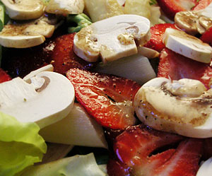

Spargelsalat
3,5 von 6500 g badischer spargel schälen und ca. 15 minuten in salzwasser kochen, abtropfen und mit kaltem wasser abschrecken. erdbeeren, champignon, kopfsalat und spargeln auf dem teller anrichten und mit salatsauce begiessen.
